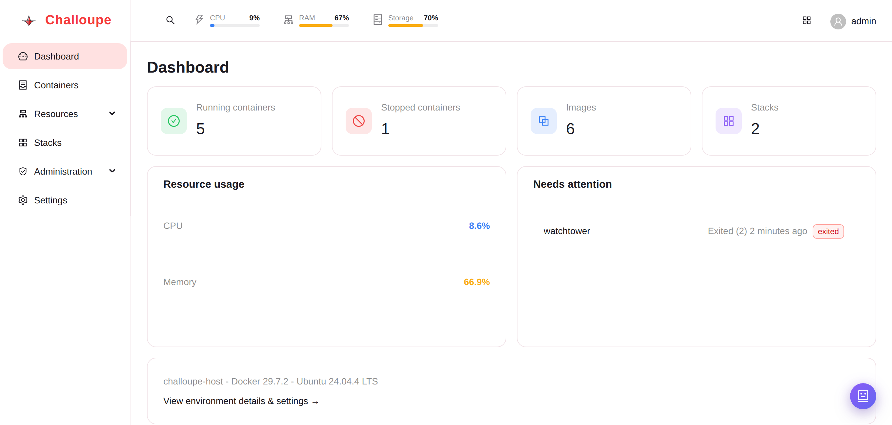
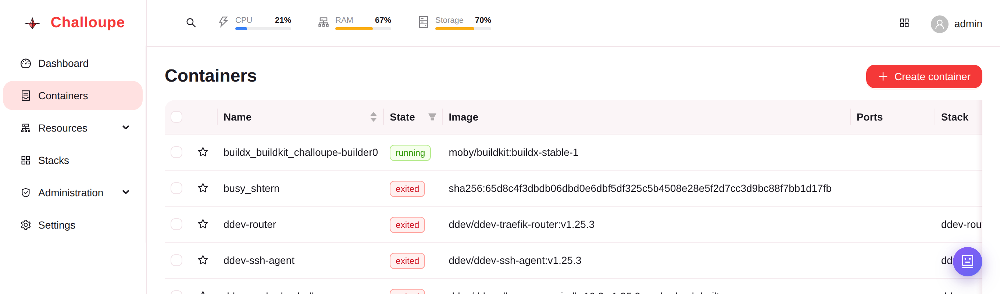
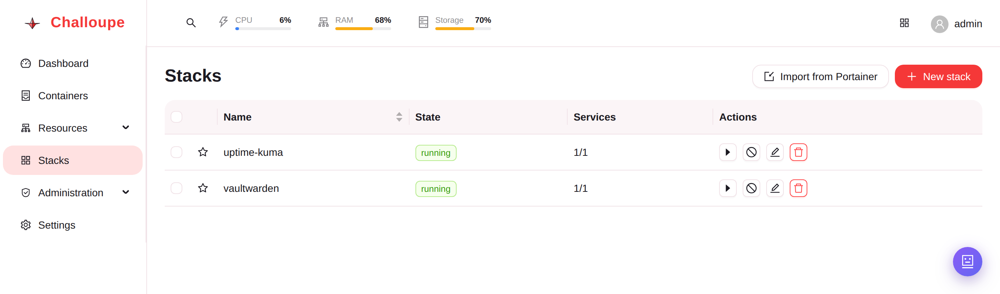
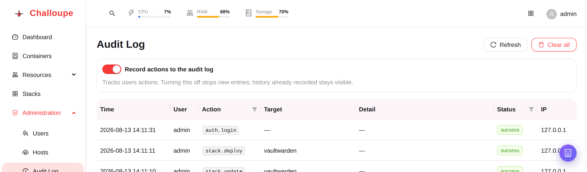

Docker management, without the paywall.
Containers, images, volumes, networks and compose stacks. Plus the RBAC, SSO, audit logging and vulnerability scanning other tools save for a paid tier. Challoupe has no license to sell, so it's all included.

Why is it free?
Challoupe isn't free to undercut anyone, and it isn't free because it's funded some other way behind the scenes. It's free because self-hosting is supposed to mean your infrastructure stays yours: nothing rented back to you one feature at a time, and nothing quietly paid for with your data.
Freedom
No license, no seat count, no feature locked behind a paywall. It's open source. Read it, fork it, run it exactly the way you want, for as long as you want.
Privacy
Everything runs on your own infrastructure. Even the AI assistant talks to your own Ollama server. No logs, no prompts, no container data ever leaves your network.
No spying
No telemetry, no usage analytics, no ads, nothing sold to a third party. Challoupe isn't funded by watching what you do with it, there's simply nothing to fund.
Everything included.
Every capability below ships in the same free build.
Granular RBAC
Per-capability permissions across containers, images, volumes, networks and stacks, enforced on both API and UI.
Two-factor auth
TOTP with any authenticator app, single-use backup codes, and admin-side reset if a device is lost.
Full audit log
Every mutation, sign-in and denied permission check. Who did what, and when.
Notifications & alerts
Webhook alerts for Discord, Slack or plain JSON, plus ntfy push, on crashes, image updates, resource thresholds and failed backups.
OIDC / SSO
Bring your own identity provider, no per-seat SSO tax.
Multiple hosts
Register any number of remote Docker hosts over SSH and switch between them. Logs, stats and terminal all follow along.
Local AI assistant
Log diagnosis, compose-file generation, and a chat assistant all via your own Ollama server, nothing sent elsewhere.
Vulnerability scanning
One-off Trivy scans on any image, severity-sorted CVEs, no persistent scanner service.
Stack drift detection
Flags containers, tags or services that no longer match the compose file they came from.
Deploy webhooks
A token URL per stack for a build pipeline to call. It redeploys with the freshest images automagically.
Backup & restore
One JSON export of every user, setting and stack. On demand or on a schedule.
Container terminal
A real shell into any container, right from the browser.

Containers

Stacks

Audit log
Just docker compose up.
Pull the published image directly, or clone the repo and bring it up with Compose.
docker pull ghcr.io/alexis-coulombe/challoupe:latest
docker run -d --name challoupe \
-p 3001:3001 \
-v /var/run/docker.sock:/var/run/docker.sock \
-v challoupe_data:/app/data \
ghcr.io/alexis-coulombe/challoupe:latestOr, from a clone of this repo, docker-compose.yml already points at the same image:
git clone https://github.com/alexis-coulombe/Challoupe.git
cd Challoupe
docker compose up -dRun it yourself.
Every feature above ships in the same free build, self-hosted on your own infrastructure. No license, no seat count.
View on GitHub →